JMX to skrót od Java Management Extensions. Z jednej strony jest to technologia programowania rozproszonego, z drugiej - metodologia projektowania aplikacji w taki sposób, aby mo¿na by³o je kontrolowaæ i ³atwo nimi zarz¹dzaæ ju¿ na poziomie poszczególnych obiektów, równie¿ zdalnie, przy u¿yciu rozmaitych protoko³ów komunikacyjnych. Ponadto JMX umo¿liwia nadzorowanie zasobów maszyny wirtualnej Javy.
Wa¿n¹ zalet¹ tej technologii jest prostota i wyj¹tkowa ³atwoœæ w u¿yciu. Nie wymaga ona du¿ej iloœci dodatkowego kodu do uzyskania gotowego rozwi¹zania. Jest przy tym uniwersalna i skalowalna - mo¿na j¹ stosowaæ we wszelkiego rodzaju aplikacjach: od urz¹dzeñ mobilnych po wielkie serwery korporacyjne. Ze wzglêdu na swe mo¿liwoœci staje siê coraz bardziej popularna na œwiecie i wielu dostawców oprogramowania biznesowego w³¹cza j¹ do swoich produktów (np. IBM WebSphere, JBoss, BEA WebLogic, Tomcat).
Pierwszy z dwóch wyk³adów przedstawia podstawowe koncepcje JMX na prostych przyk³adach.PrzejdŸmy od razu do rzeczy. Zademonstrujemy bardzo prosty przyk³ad. Poka¿e on, ¿e JMX jest narzêdziem o potê¿nych mo¿liwoœciach bêd¹c jednoczeœnie bardzo prostym w u¿yciu. Na pocz¹tek dokonamy zdalnego pobrania wartoœci pola pewnego obiektu oraz jego modyfikacji. Oczywiœcie, mo¿liwoœci JMX nie ograniczaj¹ siê wy³¹cznie do odczytu i zapisu stanów obiektów. Równie ³atwo mo¿emy np. rejestrowaæ s³uchaczy, którzy bêd¹ powiadamiani o zachodz¹cych zmianach, co zobaczymy dalej.
W oparciu o specyfikacjê JMX stworzymy klasê,
której obiekty - tzw. m-ziarna (ang. mbean) -
bêd¹ mog³y udostêpniaæ swoj¹ sk³adow¹.
Dla uproszczenia bêdzie to jedyne pole tej klasy,
powiedzmy value typu int.
Klasa bêdzie siê nazywaæ SomeValue.
Oto ona:
public class SomeValue
implements SomeValueMBean {
public int getValue() {
System.out.println("Wywo³ano metodê getValue(), która zwróci³a wynik: " + value);
return value;
}
public void setValue(int val) {
this.value = val;
System.out.println("Wywo³ano metodê setValue() z argumentem: " + val);
}
/**
* Atrybut, który udostêpniamy
*/
private int value = 0;
}
Klasa m-ziarna musi byæ publiczna i musi mieæ publiczny konstruktor (tu domyœlny).
Jak widaæ, klasa SomeValue nie zawiera nic
wyj¹tkowego, poza implementacj¹ interfejsu SomeValueMBean.
Interfejs ten - zwany interfejsem zarz¹dzania albo krócej:
m-interfejsem - musimy sami stworzyæ.
Opisuje on w³aœciwoœci klasy poprzez deklaracje akcesorów - metod dostêpu do atrybutów
(mo¿e zawieraæ równie¿ deklaracje dowolnych innych metod - patrz dalej).
Interfejs zarz¹dzania - podobnie jak klasa m-ziarna - musi byæ
publiczny. Oto on:
public interface SomeValueMBean {
/**
* Getter dla atrybutu "Value"
*/
public int getValue();
/**
* Setter dla atrybutu "Value"
*/
public void setValue(int value);
}
Interfejs zarz¹dzania SomeValueMBean zawiera
deklaracje gettera i settera dla atrybutu "Value"
udostêpnionego w klasie implementuj¹cej SomeValue.
Nazwa tego atrybutu - jako napis, który bêdzie u¿ywany w infrastrukturze JMX -
zaczyna siê du¿¹ liter¹ w przeciwieñstwie do nazwy sk³adowej value,
która zaczyna siê liter¹ ma³¹.
Proszê zwróciæ uwagê, ¿e nazwa interfejsu zarz¹dzania jest
nazw¹ klasy, która go implementuje z dodanym obowi¹zkowym
przyrostkiem MBean. Taki interfejs musimy zawsze
dostarczyæ i - w najprostszym przypadku - jest to jedyny wymóg
wobec klasy, która chce udostêpniaæ jakieœ atrybuty poprzez
JMX. Oczywiœcie, musimy przestrzegaæ standardowych regu³ nazewniczych
wobec akcesorów - setterów i getterów. Metody
pobieraj¹ce wartoœci musz¹ zaczynaæ siê od przedrostka get
a ustalaj¹ce wartoœci - od przedrostka set. Po nich
nastêpuje nazwa atrybutu pisana du¿¹ liter¹ zak³adaj¹c, ¿e nazwa pola
klasy zaczyna siê liter¹ ma³¹.
Atrybuty udostêpniane przez m-ziarna nie musz¹ byæ bezpoœrednio zwi¹zane ze sk³adowymi klasy. Mog¹ to byæ dowolne wartoœci np. wyliczane dynamicznie przez jakieœ metody. Jeœli nie dostarczymy settera, to atrybut bêdzie tylko do odczytu. Podobnie, jeœli nie dostarczymy gettera, to atrybut bêdzie tylko do zapisu.
Aby uruchomiæ nasz przyk³adowy program potrzebujemy jeszcze agenta, który utworzy obiekt m-ziarna i zarejestruje go w serwerze m-ziaren, oraz klienta, który bêdzie z niego korzysta³.
Serwer m-ziaren - inaczej m-serwer - s³u¿y do przechowywania m-ziaren
i udostêpniania ich na zewn¹trz.
Po stronie agenta jest reprezentowany przez interfejs MBeanServer
pakietu javax.management,
natomiast po stronie klienta przez jego nadinterfejs MBeanServerConnection
(w zwi¹zku z tym klient ma mniejsze mo¿liwoœci w korzystaniu z m-serwera ni¿ agent).
Aplikacje mog¹ tworzyæ w³asne m-serwery statycznymi metodami klasy MBeanServerFactory,
jednak zaleca siê korzystanie z systemowego serwera m-ziaren zwracanego przez metodê
getPlatformMBeanServer() klasy ManagementFactory
(pakiet java.lang.management).
Oto kod agenta.
import java.lang.management.*;
import javax.management.*;
import javax.management.remote.*;
public class Agent {
public static void main(String[] args)
// dla uproszczenia przyk³adu nie obs³ugujemy wyj¹tków
throws Exception {
// Pobieramy odniesienie do m-serwera systemowego
MBeanServer mbs = ManagementFactory.getPlatformMBeanServer();
// Tworzymy nazwê dla m-ziarna,
// pod któr¹ zostanie on zarejestrowany
ObjectName name = new ObjectName("software.JMX:example=standard");
// Tworzymy m-ziarno SomeValue
SomeValue mbean = new SomeValue();
// Rejestrujemy m-ziarno w m-serwerze
mbs.registerMBean(mbean, name);
// Czekamy na zg³oszenia klientów
System.out.println("Czekam na zg³oszenia...");
Thread.sleep(Long.MAX_VALUE);
}
}
Pierwszym krokiem, który zawsze musi wykonaæ agent jest pobranie odniesienia do m-serwera,
w którym zostanie zarejestrowane m-ziarno.
Wykorzystujemy do tego metodê getPlatformMBeanServer(),
która zwraca odniesienie do domyœlnego m-serwera.
Drugim krokiem jest utworzenie nazwy dla
m-ziarna, pod któr¹ zostanie ono zarejestrowane. Nazwa dla
m-ziarna jest obiektem klasy ObjectName z pakietu
javax.management. Opakowuje on napis - reprezentuj¹cy
m-ziarno w sposób zrozumia³y dla cz³owieka - w obiekt, który
jest u¿ywany do identyfikacji tego m-ziarna.
W trzecim i ostatnim kroku -
metod¹ registerMBean() -
rejestrujemy w m-serwerze sam obiekt m-ziarna.
Od tej pory m-ziarno jest dostêpne dla klientów,
którzy mog¹ odczytywaæ i modyfikowaæ wartoœæ jego atrybutu.
Nazwa dla m-ziarna - jako napis przekazywany do konstruktora klasy ObjectName -
sk³ada siê z:
pl.edu.pjwstk.JMX; w naszym przyk³adzie u¿ywaliœmy dziedziny software.JMX
klucz=wartoϾ oddzielonych przecinkami;
co najmniej jedna taka para musi wyst¹piæ, kolejnoœæ nie jest istotna:
klucz jest napisem nios¹cym jak¹œ informacjê o m-ziarnie;
w naszym przyk³adzie u¿ywaliœmy klucza example,
W tym prostym przyk³adzie dzia³anie aplikacji (np. serwera) udostêpniaj¹cej m-ziarno zosta³o zasymulowane poprzez uœpienie w¹tku (gdybyœmy tego nie zrobili - program zakoñczy³by siê). Oczywiœcie, w rzeczywistych aplikacjach takie uœpienie jest zbêdne, gdy¿ zwykle podejmuj¹ one jakieœ dzia³ania po skonfigurowaniu œrodowiska.
Teraz pora na klienta. Jego jedynym zadaniem - w tym prostym
przypadku - bêdzie pobranie i modyfikacja atrybutu "Value"
z m-ziarna zarejestrowanego pod nazw¹ "software.JMX:example=standard".
Klient mo¿e byæ uruchomiony na maszynie lokalnej lub zdalnej - z
punktu widzenia kodu nie robi to ¿adnej ró¿nicy. Oto kod
klienta:
import javax.management.*;
import javax.management.remote.*;
public class Client {
public static void main(String[] args)
// dla uproszczenia przyk³adu nie obs³ugujemy wyj¹tków
throws Exception {
int port = 2006;
String host = "localhost";
if(args.length > 0)
host = args[0];
if(args.length > 1)
port = Integer.parseInt(args[1]);
String url = "service:jmx:rmi:///jndi/rmi://" + host + ":" + port + "/jmxrmi";
// Nawi¹zujemy po³¹czenie z m-serwerem w kilku krokach
JMXConnector jmxcon = JMXConnectorFactory.connect(new JMXServiceURL(url));
MBeanServerConnection server = jmxcon.getMBeanServerConnection();
// Tworzymy nazwê m-ziarna, z którego chcemy skorzystaæ
ObjectName name = new ObjectName("software.JMX:example=standard");
// Pobieramy wartoϾ atrybutu Value z naszego m-ziarna
int value = (Integer)server.getAttribute(name, "Value");
System.out.println("WartoϾ atrybutu Value: " + value);
// Zmieniamy wartoϾ atrybutu
server.setAttribute(name, new Attribute("Value", value+1));
// Ponownie pobieramy wartoϾ atrybutu Value
value = (Integer)server.getAttribute(name, "Value");
System.out.println("Nowa wartoϾ atrybutu: " + value);
}
}
Najpierw pobieramy ewentualne argumenty: nazwê hosta, z którym siê po³¹czymy oraz numer portu, przez który bêdzie odbywaæ siê komunikacja.
Pierwszym zadaniem klienta jest nawi¹zanie po³¹czenia z m-serwerem,
w którym jest zarejestrowane nasze m-ziarno.
W tym celu musimy pozyskaæ obiekt typu MBeanServerConnection,
który bêdzie reprezentowa³ m-serwer po stronie klienta.
Nie tworzymy go konstruktorem,
lecz pobieramy jako rezultat metody getMBeanServerConnection()
wywo³anej na rzecz ³¹cznika typu JMXConnector.
Z kolei ³¹cznik ten jest uzyskany na podstawie URLa,
który identyfikuje serwer m-ziaren.
URL m-serwera jest reprezentowany przez obiekt klasy JMXServiceURL,
który opakowuje napis postaci: service:jmx:rmi:///jndi/rmi://host:port/jmxrmi
Jego jedynym zmiennym fragmentem (tj. takim, którym mo¿emy manipulowaæ) jest
nazwa hosta host (mo¿e to byæ jego adres IP) i numer portu port,
poprzez który bêdzie odbywaæ siê komunikacja z m-serwerem, a wiêc i m-ziarnem.
Ten sam numer portu jest podawany agentowi podczas
uruchamiania i mo¿e on przyjmowaæ dowolne sensowne wartoœci.
Po nawi¹zaniu po³¹czenia z m-serwerem tworzymy nazwê dla m-ziarna,
podaj¹c konstruktorowi ObjectName dok³adnie taki sam
napis, jaki by³ u¿yty podczas rejestracji m-ziarna w m-serwerze.
Na zakoñczenie pobieramy wartoœæ atrybutu "Value"
(odnosz¹cego siê w tym przyk³adzie do pola value klasy
SomeValue). Proszê zwróciæ uwagê, ¿e wynik metody
getAttribute() (typu Object) zosta³
zrzutowany na typ Integer a nastêpnie przypisany na
zmienn¹ typu int. Ma tu miejsce tzw. unboxing
obecny w Javie od wersji 1.5. Metoda setAttribute(ObjectName name, Attribute attr) s³u¿y do nadania nowej wartoœci
atrybutowi reprezentowanemu przez nazwê name. Nowa
wartoϾ atrybutu jest opakowana w obiekt klasy Attribute.
Jej konstruktorowi przekazujemy jako argumenty: nazwê atrybutu (nie
nazwê sk³adowej!) oraz now¹ wartoœæ jako obiekt. Podobnie jak przy
pobieraniu wartoœci wykorzystujemy tu autoboxing, dziêki
któremu zmienna typu int zostanie automatycznie
opakowana w obiekt klasy Integer. Aby przekonaæ siê, ¿e
zmiana rzeczywiœcie zasz³a, ponownie pobieramy i wypisujemy wartoœæ
atrybutu.
Teraz pozosta³o ju¿ tylko uruchomiæ nasz przyk³ad, sk³adaj¹cy siê z dwóch programów: agenta (który rejestruje m-ziarno i udaje dzia³aj¹c¹ aplikacjê) oraz klienta (który ³¹czy siê z m-serwerem i korzysta z m-ziarna). Agentowi musimy przekazaæ specjalne opcje podczas uruchamiania, które spowoduj¹ nadanie odpowiednich wartoœci w³aœciwoœciom maszyny wirtualnej zwi¹zanym z infrastruktur¹ JMX. W szczególnoœci musimy przekazaæ numer portu, poprzez który bêdzie odbywaæ siê komunikacja z klientami. Oto sposób uruchomienia agenta:
Po uruchomieniu na konsoli agenta pojawi siê napis
Czekam na zg³oszenia....
Teraz uruchamiamy klienta. Jako argumenty
podajemy nazwê hosta na którym dzia³a agent oraz numer portu
taki sam jak przy uruchamianiu agenta.
W tym momencie na konsoli klienta pojawi siê napis
natomiast na konsoli agenta - na skutek wywo³ania metod getValue()
i setValue()- pojawi siê napis:
Wyniki dzia³ania programu mo¿na zaobserwowaæ na zrzutkach 1 i 2.
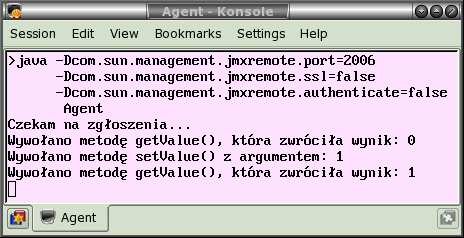
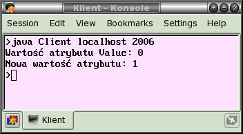
W ten prosty sposób dostaliœmy siê do wnêtrza obiektu zlokalizowanego byæ mo¿e na innej maszynie. Wa¿ne jest, ¿e narzut - w sensie dodatkowych instrukcji kodu niezbêdnych do wykorzystania JMX - jest niewielki i do tego sta³y, w zasadzie niezale¿ny od poziomu skomplikowania aplikacji. Zatem technologia ta jest ³atwo skalowalna.
Mo¿liwoœci operowania na m-ziarnach nie ograniczaj¹ siê do odczytywania i modyfikowania wartoœci atrybutów tych obiektów. Mo¿emy wywo³ywaæ dowolne (publiczne) metody przekazuj¹c im argumenty i odbieraj¹c wyniki ich dzia³ania. Mo¿emy równie¿ odbieraæ sygna³y.
Sygna³ jest obiektem klasy Notification (pakiet
javax.management) nios¹cym informacjê o jakimœ
zdarzeniu. Taki obiekt mo¿e zostaæ wyemitowany przez m-ziarno.
Zostanie wtedy dostarczony do s³uchaczy sygna³ów
zarejestrowanych wczeœniej w tym m-ziarnie. Typowym przyk³adem
takiego zdarzenia jest modyfikacja atrybutu. Odpowiada mu dedykowana
klasa AttributeChangeNotification, bêd¹ca podklas¹ klasy
Notification. Obiekt tej klasy zawiera informacje o
starej i nowej wartoœci atrybutu.
Klasa m-ziarna chc¹cego wysy³aæ sygna³y musi implementowaæ
interfejs NotificationEmitter z pakietu
javax.management. W praktyce dziedziczy siê klasê
NotificationBroadcasterSupport, która
implementuje ten interfejs dostarczaj¹c dodatkowo u¿ytecznych metod.
Emisja sygna³u nastêpuje na skutek wywo³ania metody
sendNotification(Notification) odziedziczonej z klasy
NotificationBroadcasterSupport. Obiekt sygna³u
przekazany jako argument zostanie rozes³any do s³uchaczy (obiektów
klas implementuj¹cych interfejs NotificationListener)
zarejestrowanych wczeœniej metod¹ addNotificationListener().
Rozszerzymy nasz wstêpny przyk³ad o mo¿liwoœæ wywo³ywania metod i
emisji sygna³ów. Metod¹, któr¹ bêdziemy wywo³ywaæ
bêdzie void reset() (dodamy j¹ do klasy m-ziarna),
natomiast sygna³ bêdzie wysy³any na skutek modyfikacji atrybutu
"Value". W tym celu trzeba bêdzie zmodyfikowaæ
metodê set(int).
Poniewa¿ dodaliœmy do m-ziarna metodê, musimy uwzglêdniæ to w m-interfejsie.
public interface SomeValueMBean {
public int getValue();
public void setValue(int value);
/*
* Dodatkowa metoda
*/
public int reset();
}
Do klasy SomeValue dodamy implementacjê metody
reset() i zmodyfikujemy metodê set() tak,
by po zmianie wartoœci sk³adowej value by³ wysy³any
sygna³. Proszê zwróciæ uwagê na dodatkowe prywatne pole
sequenceNumber. Bêdzie ono przechowywaæ kolejny numer
sygna³u (bowiem ka¿dy sygna³ ma swój numer).
import javax.management.*;
public class SomeValue
extends NotificationBroadcasterSupport
implements SomeValueMBean {
public int getValue() {
return value;
}
public void setValue(int val) {
Notification notify = // tworzymy sygna³
new AttributeChangeNotification(
this, // Ÿród³o sygna³u
sequenceNumber++, // numer sygna³u
System.currentTimeMillis(), // czas wys³ania
"WartoϾ zmieniona", // wiadomoϾ
"Value", // nazwa atrybutu
"int", // typ atrybutu
value, // stara wartoϾ
val // nowa wartoϾ
);
this.value = val;
sendNotification(notify); // rozsy³amy sygna³
System.out.println("Nowa wartoϾ atrybutu \\\\\\\\"Value\\\\\\\\": " + value);
}
public int reset() {
if (value == 0)
return 0;
int oldval = value;
setValue(0);
return oldval;
}
/**
* Numer sygna³u
*/
private long sequenceNumber = 1; // dodatkowy pole
private int value = 0;
}
Tworz¹c obiekt sygna³u (w tym wypadku klasy
AttributeChangeNotification) przekazujemy konstruktorowi
jako argumenty: Ÿród³o sygna³u, kolejny numer, czas emisji,
komunikat s³owny, nazwê atrybutu, jego typ oraz star¹ i now¹ wartoœæ.
Ta informacja dotrze do s³uchaczy.
Kod klienta w zasadzie nie ró¿ni siê od poprzedniego przypadku
(obs³uga b³êdów zosta³a uszczegó³owiona).
Tym razem wywo³ujemy metodê reset()
(modyfikuj¹c wczeœniej wartoœæ atrybutu "Value" tak by by³a ró¿na od 0).
Oprócz tego tworzymy obiekt s³uchacza sygna³ów i rejestrujemy go w m-serwerze,
który po stronie klienta jest reprezentowany przez obiekt klasy MBeanServerConnection.
import javax.management.*;
import javax.management.remote.*;
import java.io.*;
public class Client {
public static void main(String[] args) {
int port = 2006;
String host = "localhost";
if(args.length > 0)
host = args[0];
if(args.length > 1)
port = Integer.parseInt(args[1]);
String url = "service:jmx:rmi:///jndi/rmi://" + host + ":" + port + "/jmxrmi";
ObjectName name = null;
JMXConnector jmxcon = null;
MBeanServerConnection srvcon = null;
try {
// Nawi¹zujemy po³¹czenie z m-serwerem
JMXServiceURL jmxurl = new JMXServiceURL(url);
jmxcon = JMXConnectorFactory.connect(jmxurl);
srvcon = jmxcon.getMBeanServerConnection();
// Tworzymy nazwê m-ziarna, z którego chcemy skorzystaæ
name = new ObjectName("software.JMX:example=standard");
// Tworzymy nas³uch
ClientListener listener = new ClientListener();
srvcon.addNotificationListener(name, listener, null, null);
}
catch(JMException e){
System.err.println(e);
}
catch(IOException e){
System.err.println(e);
}
try {
// Zmieniamy wartoœæ atrybutu tak by by³a != od 0
srvcon.setAttribute(name, new Attribute("Value", 1));
// I wywo³ujemy metodê reset:
Object[] params = new Object[0];
String[] signature = new String[0];
int retval = (Integer)srvcon.invoke(name, "reset", params, signature);
}
catch(JMException e){
System.err.println(e);
}
catch(IOException e){
System.err.println(e);
}
// Musimy poczekaæ na nadejœcie sygna³u.
try {
Thread.sleep(1000);
}
catch(InterruptedException e){
}
}
}
Dodaj¹c s³uchacza w metodzie addNotificationListener()
podajemy jako argumenty: nazwê dla m-ziarna bêd¹cego Ÿród³em
zdarzenia, obiekt s³uchacza, ewentualny filtr sygna³ów (tutaj
null) oraz opcjonalny obiekt (dowolnej klasy), który
bêdzie przekazywany pomiêdzy Ÿród³em a s³uchaczem w celu
identyfikacji (tu równie¿ null).
Metodê reset() z naszego m-ziarna wywo³ujemy poœrednio,
poprzez wywo³anie invoke() ze zdalnego reprezentanta m-serwera.
Jako argumenty przekazujemy jej:
ObjectName), z którego bêdziemy wywo³ywaæ metodê,
Object[]) z argumentami,
jeœli metoda jest bezargumentowa to tablica musi mieæ d³ugoœæ 0,
Object.
Poniewa¿ nasza metoda reset() zwraca int,
wiêc faktycznym typem wyniku jest Integer.
Po zrzutowaniu wykorzystujemy unboxing aby wy³uskaæ ze zwróconego obiektu
wartoϾ pierwotnego typu int.
Uœpienie w¹tku na koñcu programu jest potrzebne, aby maszyna wirtualna nie zakoñczy³a dzia³ania przed nadejœciem sygna³u. Oczywiœcie, w przypadku rzeczywistej aplikacji jest to zbêdne.
S³uchacz sygna³ów musi dostarczyæ implementacji metody
handleNotification() wymuszonej przez interfejs nas³uchu
NotificationListener. Bêdzie ona wywo³ywana (poprzez
callback) zawsze, kiedy nadejdzie sygna³.
import java.util.Date;
import javax.management.*;
public class ClientListener
implements NotificationListener {
public void handleNotification(Notification notification, Object handback) {
System.out.println("Odebrano sygna³:");
System.out.println("WiadomoϾ: " + notification.getMessage());
System.out.println("Numer: " + notification.getSequenceNumber());
System.out.println("Wys³ano: " + new Date(notification.getTimeStamp()));
System.out.println("Dane u¿ytkownika: " + notification.getUserData());
AttributeChangeNotification attrNotif = (AttributeChangeNotification)notification;
System.out.println("Stara wartoϾ: " + attrNotif.getOldValue());
System.out.println("Nowa wartoϾ: " + attrNotif.getNewValue());
}
}
Obiektu sygna³u notification,
który jest przekazany jako argument mo¿emy wypytaæ o szczegó³y dotycz¹ce zdarzenia.
Oprócz niego, jako dodatkowy argument, jest dostêpny obiekt identyfikuj¹cy (handback),
który by³ przekazany podczas rejestracji s³uchacza (tu go ignorujemy).
Kod agenta jest identyczny jak w poprzednim przypadku. Sposób uruchomienia równie¿. Na konsoli agenta powinniœmy zobaczyæ taki komunikat:
Natomiast po stronie klienta zobaczymy opisy sygna³ów wys³anych po
zmianie wartoœci atrybutu a nastêpnie wywo³aniu reset():
Wynik dzia³ania jest widoczny na obrazkach:
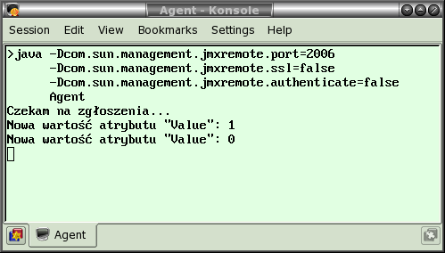
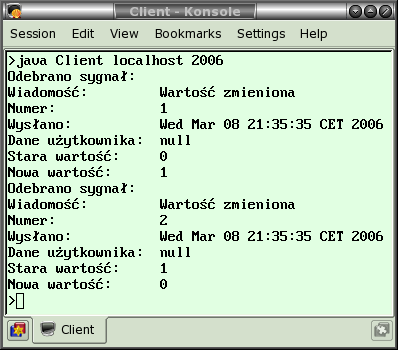
Proszê zwróciæ uwagê, ¿e po stronie klienta nie jest potrzebna znajomoœæ interfejsu zarz¹dzania m-ziarna (ani tym bardziej jego klasy)! Wystarczy znajomoœæ nazw i typów atrybutów, ewentualnie sygnatur metod. Jest to niezwykle wygodne dla klientów, zw³aszcza jeœli oprogramowanie m-ziarna podlega zmianom, b¹dŸ jego interfejs nie mo¿e byæ udostêpniony ze wzglêdów komercyjnych czy innych.
Jeœli interfejs zarz¹dzania jest dostêpny po stronie klienta, to ca³y proces dostêpu do m-ziarna jest jeszcze prostszy i szybszy. Jest on zw³aszcza wygodny przy operowaniu m-ziarnami maszyny wirtualnej, co opiszemy w dalszej czêœci.
Skoro mamy dostêp do interfejsu zarz¹dzania, to znamy sygnatury wszystkich metod, równie¿ akcesorów - a przez to i atrybuty m-ziarna (zak³adaj¹c, ¿e zosta³o zbudowane zgodnie z konwencjami). Moglibyœmy je wywo³ywaæ bezpoœrednio, ale niestety klasa m-ziarna z regu³y nie jest dostêpna po stronie klienta. W zwi¹zku z tym infrastruktura JMX dostarcza tzw. poœrednika (ang. proxy). Jest to obiekt klasy implementuj¹cej interfejs zarz¹dzania, który deleguje wywo³ania wszystkich metod do w³aœciwego m-ziarna (poprzez sieæ).
Wykorzystamy klasê m-ziarna i interfejs zarz¹dzania z poprzedniego przyk³adu. Kod agenta jest identyczny. Inny bêdzie tylko kod klienta, jednak ró¿nice - z punktu widzenia kodu - bêd¹ minimalne. Jak zwykle, na pocz¹tku klient musi wykonaæ standardowe czynnoœci polegaj¹ce na uzyskaniu po³¹czenia z m-serwerem i utworzeniu nazwy dla m-ziarna.
import javax.management.*;
import javax.management.remote.*;
import java.io.*;
public class ProxyClient {
public static void main(String[] args) {
int port = 2006;
String host = "localhost";
if(args.length > 0)
host = args[0];
if(args.length > 1)
port = Integer.parseInt(args[1]);
String url = "service:jmx:rmi:///jndi/rmi://" + host + ":" + port + "/jmxrmi";
ObjectName name = null;
JMXConnector jmxcon = null;
MBeanServerConnection srvcon = null;
try {
// Nawi¹zujemy po³¹czenie z m-serwerem
JMXServiceURL jmxurl = new JMXServiceURL(url);
jmxcon = JMXConnectorFactory.connect(jmxurl);
srvcon = jmxcon.getMBeanServerConnection();
// Tworzymy nazwê m-ziarna
name = new ObjectName("software.JMX:example=standard");
// Tworzymy nas³uch
ClientListener listener = new ClientListener();
srvcon.addNotificationListener(name, listener, null, null);
}
catch(JMException e){
System.err.println(e);
}
catch(IOException e){
System.err.println(e);
}
// Tworzymy poœrednika
SomeValueMBean someValueMBeanProxy = (SomeValueMBean)
MBeanServerInvocationHandler.newProxyInstance(
srvcon, name, SomeValueMBean.class, false
);
// Wywo³ujemy metody:
someValueMBeanProxy.setValue(2);
someValueMBeanProxy.getValue();
someValueMBeanProxy.reset();
// Musimy poczekaæ na nadejœcie sygna³u.
try {
Thread.sleep(500);
}
catch(InterruptedException e){
}
}
}
Nastêpnie - za pomoc¹ statycznej metody newProxyInstance
z klasy MBeanServerInvocationHandler (pakiet
javax.management) - tworzymy obiekt poœrednika
someValueMBeanProxy typu SomeValueMBean, a
wiêc takiego samego typu jak m-ziarno. Jako argumenty przekazujemy
tej metodzie:
srvcon),
name),
NotificationEmitter dziêki czemu bêdziemy
mogli zdalnie dodawaæ i usuwaæ s³uchaczy sygna³ów.
Obiektu someValueMBeanProxy u¿ywamy w zwyk³y sposób wywo³uj¹c metody,
tak jakby m-ziarno znajdowa³o siê w lokalnej maszynie wirtualnej.
Osoby obeznane z RMI zauwa¿¹ tu pewne podobieñstwa.
W istocie, JMX wykorzystuje RMI jako jeden z mo¿liwych protoko³ów komunikacji.
Uruchomienie tego przyk³adu jest identyczne jak w poprzednim przypadku.
Metody setValue() i reset() powoduj¹ emisjê sygna³u,
co mo¿na zaobserwowaæ na zrzutkach.
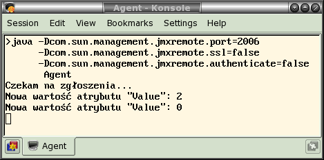
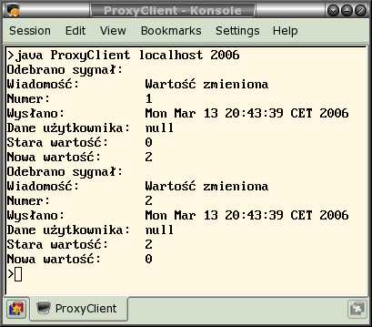
Ten sposób u¿ycia m-ziarna jest preferowany, jeœli klient ma dostêp do interfejsu zarz¹dzania ju¿ na etapie kompilacji, co nie zawsze jest mo¿liwe.
Pocz¹wszy od wersji 5 maszyna wirtualna Javy udostêpnia niektóre swoje zasoby
jako tzw. m-ziarna systemowe (ang. platform mxbean) - inaczej mx-ziarna.
S¹ one reprezentowane przez interfejsy zarz¹dzania pakietu java.lang.management.
Mx-ziarna umo¿liwiaj¹ monitorowanie i zarz¹dzanie nastêpuj¹cymi zasobami JVM:
Obiekty mx-ziaren s¹ tworzone przez JVM a odniesienia do nich
zwracaj¹ statyczne metody klasy ManagementFactory
(pakiet java.lang.management).
Po uzyskaniu odniesienia mo¿emy takiego obiektu u¿ywaæ (lokalnie) w zwyk³y sposób, np.:
RuntimeMXBean runmxb = ManagementFactory.getRuntimeMXBean(); long start = runmxb.getStartTime();
Powy¿szy kod zwróci czas uruchomienia JVM.
To podejœcie ma istotne ograniczenie: pozwala na odpytywanie wy³¹cznie tej maszyny wirtualnej, na której siê wykonuje. Jeœli chcemy skorzystaæ z mx-ziaren zdalnej maszyny wirtualnej, musimy uzyskaæ dostêp do nich w jeden z wy¿ej opisanych sposobów:
set/getAttribute() i invoke());
nazwy atrybutów mo¿na wydedukowaæ z nazw akcesorów zadeklarowanych w tych interfejsach,
Drugi sposób jest prostszy i mo¿emy go zastosowaæ,
poniewa¿ interfejsy zarz¹dzania odpowiednich mx-ziaren s¹ dostêpne w
standardowym pakiecie java.lang.management,
a wiêc s¹ obecne w JDK.
Pod³¹czymy siê do dzia³aj¹cej maszyny wirtualnej, w której jest uruchomiony jakiœ program i sprawdzimy iloœæ u¿ywanej pamiêci. Oto program klienta pobieraj¹cego informacje:
import java.io.*;
import java.net.*;
import javax.management.*;
import javax.management.remote.*;
import java.lang.management.*;
import static java.lang.management.ManagementFactory.*;
public class MXClient {
public static void main(String[] args) {
int port = 2006;
String host = "localhost";
if(args.length > 0)
host = args[0];
if(args.length > 1)
port = Integer.parseInt(args[1]);
String url = "service:jmx:rmi:///jndi/rmi://" + host + ":" + port + "/jmxrmi";
JMXServiceURL jmxurl = null;
JMXConnector jmxcon = null;
MBeanServerConnection srvcon = null;
MemoryMXBean memxbean = null;
try {
jmxurl = new JMXServiceURL(url);
}
catch(MalformedURLException e){
System.err.println(e);
}
try {
// Nawi¹zujemy po³¹czenie z m-serwerem
jmxcon = JMXConnectorFactory.connect(jmxurl);
srvcon = jmxcon.getMBeanServerConnection();
// Pobieramy mx-ziarno reprezentuj¹ce pamiêæ
memxbean = newPlatformMXBeanProxy(srvcon, MEMORY_MXBEAN_NAME, MemoryMXBean.class);
}
catch(IOException e){
System.err.println(e);
}
// Pobieramy rozmiar sterty i uruchamiamy odœmiecanie.
long used = memxbean.getHeapMemoryUsage().getUsed();
System.out.println("Rozmiar sterty: " + used);
memxbean.gc();
System.out.println("Odœmiecanie...");
used = memxbean.getHeapMemoryUsage().getUsed();
System.out.println("Rozmiar sterty: " + used);
}
}
Po wykonaniu standardowych czynnoœci tworzymy poœrednika dla mx-ziarna reprezentuj¹cego pamiêæ.
W tym celu wywo³ujemy statyczn¹ metodê newPlatformMXBeanProxy()
z klasy ManagementFactory
(proszê zwróciæ uwagê na statyczny import tej klasy,
dziêki któremu mo¿na u¿ywaæ jej statycznych sk³adowych bez kwalifikacji).
Jako argumenty przekazujemy:
srvcon,
MEMORY_MXBEAN_NAME
z tej samej klasy, bêd¹c¹ nazw¹ dla mx-ziarna reprezentuj¹cego pamiêæ oraz
Teraz mo¿emy ju¿ operowaæ mx-ziarnem wywo³uj¹c z niego metody
bezpoœrednio. W tym przyk³adzie pobieramy rozmiar u¿ywanej pamiêci, a
nastêpnie wywo³ujemy odœmiecacz (metod¹ gc()). W ten
prosty sposób mo¿na dokonaæ zdalnego odœmiecenia maszyny
wirtualnej. Ten przyk³ad dobitnie pokazuje jak potê¿nym
narzêdziem jest JMX.
Powy¿szego klienta mo¿na pod³¹czyæ do dowolnej maszyny wirtualnej - nie musi ona wykonywaæ specjalnie przygotowanego kodu. Natomiast musi byæ w specjalny sposób uruchomiona (tzn. tak jak poprzednie programy agenta). Dla przyk³adu uruchomimy program demonstracyjny zawarty w archiwum SwingSet2.jar (dostêpny wraz z JDK w katalogu demo/jfc, o ile zainstalowano):
Nastêpnie uruchamiamy klienta (oczywiœcie, zamiast localhost wstawiamy odpowiedni¹ nazwê hosta, a numer portu ma byæ taki, jak podano podczas uruchamiania badanej maszyny wirtualnej):
Sposób uruchomienia i komunikaty prezentuj¹ obrazki:
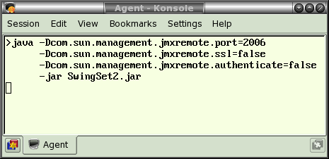
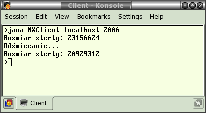
Jak widzimy zdalne odœmiecanie odnios³o skutek!
JDK zawiera program narzêdziowy jconsole, który mo¿na wykorzystaæ jako uniwersalnego klienta m-ziaren. W szczególnoœci mo¿na go u¿ywaæ do badania stanu maszyny wirtualnej poprzez odpytywanie mx-ziaren, zarówno lokalnej jak i zdalnej (choæ z uwagi na swoj¹ zasobo¿ernoœæ twórcy odradzaj¹ stosowanie go do nadzorowania maszyny lokalnej).
Maszyna wirtualna, do której chcemy przy³¹czyæ jconsole
musi byæ uruchomiona w specjalny sposób. Mo¿e ona wykonywaæ
dowolny program, w szczególnoœci taki, który tworzy i
rejestruje m-ziarna. Jeœli chcemy umo¿liwiæ wy³¹cznie lokalne
po³¹czenia z jconsole, to nale¿y ustaliæ w³aœciwoœæ
com.sun.management.jmxremote:
com.sun.management.jmxremote
podczas uruchamiania nadzorowanej maszyny wirtualnej.
Dotyczy to wy³¹cznie po³¹czeñ w obrêbie jednego hosta.
gdzie Klasa jest jakimœ programem. Spowoduje to
uaktywnienie warstwy JMX dla po³¹czeñ lokalnych. Aby umo¿liwiæ
równie¿ zdalne po³¹czenia nale¿y maszynê uruchomiæ tak:
Tu PORT jest numerem portu, przez który bêdzie
odbywaæ siê komunikacja.
Do tak uruchomionej maszyny mo¿emy przy³¹czyæ jconsole. Na pocz¹tku pojawia siê okno dialogowe s³u¿¹ce do wyboru JVM, z któr¹ bêdziemy siê ³¹czyæ.
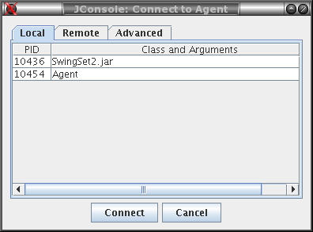
Zawiera ono panel zak³adkowy z trzema zak³adkami odpowiadaj¹cymi trzem mo¿liwym sposobom ³¹czenia siê z maszynami wirtualnymi:
com.sun.management.jmxremote.authenticate ustalono na true),
to nale¿y równie¿ podaæ nazwê u¿ytkownika i has³o (szczegó³y w nastêpnym wyk³adzie),
Domyœlna zak³adka Local prezentuje dzia³aj¹ce w macierzystym systemie maszyny wirtualne z aktywnym agentem JMX, do których mamy dostêp. Na obrazku widaæ, ¿e w lokalnym systemie dzia³aj¹ dwie maszyny wirtualne - jedna wykonuje program zawarty w archiwum SwingSet2.jar a druga klasê Agent. Zaznaczamy jedn¹ z nich i klikamy przycisk "Connect".
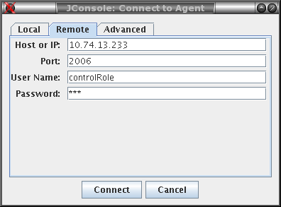
Aby zbadaæ mo¿liwoœci aplikacji jconsole uruchommy klasê Agent
z poprzedniego przyk³adu. Nastêpnie - byæ mo¿e na innej maszynie -
odpalamy jconsole i ³¹czymy siê z JVM, na której dzia³a Agent.
Powinniœmy zobaczyæ podsumowanie podstawowych informacji o maszynie wirtualnej,
z któr¹ siê po³¹czyliœmy.
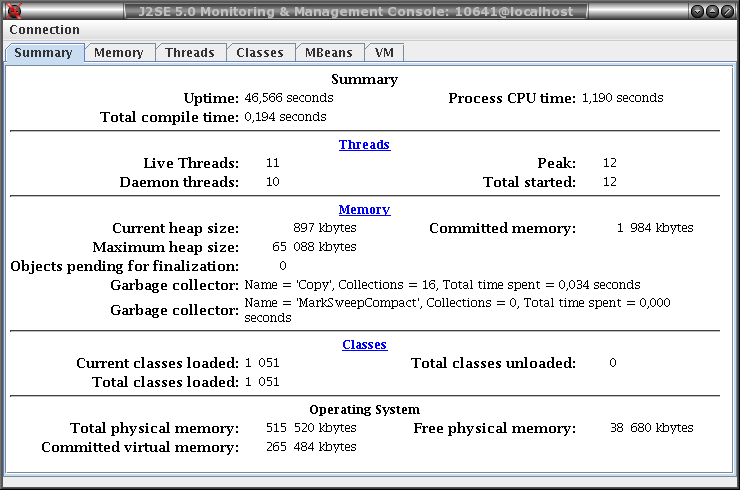
Wybieramy zak³adkê MBeans. Prezentuje ona informacje
o wszystkich m-ziarnach zarejestrowanych w JVM. Pozwala na pe³ny
dostêp do zasobów nadzorowanej maszyny wirtualnej - w tym
równie¿ umo¿liwia manipulowanie w³asnymi m-ziarnami.
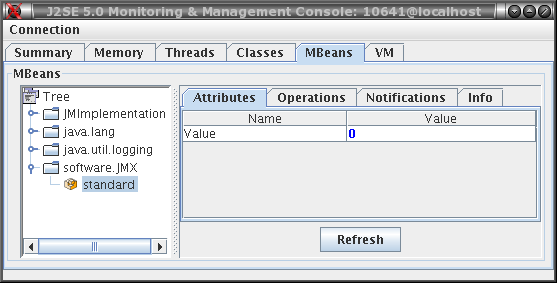
W lewym panelu otwieramy wêze³ "software.JMX". Powinien
ukazaæ siê liœæ "standard" odpowiadaj¹cy m-ziarnu
zarejestrowanemu przez agenta. Zaznaczamy go, co powoduje
uaktywnienie prawego panelu zak³adkowego. W nim mo¿emy dokonywaæ
operacji na m-ziarnie. Zak³adka Attributes prezentuje
atrybuty m-ziarna i umo¿liwia nadawanie im wartoœci poprzez zwyk³e
wpisanie nowych danych w kolumnie "Value". Otwieramy
zak³adkê "Notifications". Zawarty tam panel prezentuje
sygna³y emitowane przez m-ziarno i odebrane przez jconsole. Aby
zarejestrowaæ siê jako s³uchacz klikamy przycisk "Subscribe".
Od tej pory zmiany wartoœci atrybutu "Value" w
naszym m-ziarnie bêd¹ powodowaæ emisjê sygna³u.
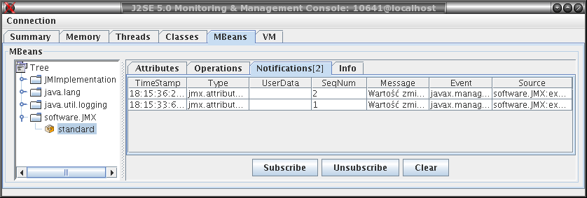
Spróbujmy. W zak³adce "Attributes" nadajemy now¹
wartoϾ atrybutowi "Value". W tym momencie na etykiecie
zak³adki "Notifications" pojawia siê liczba 1 oznaczaj¹ca,
¿e nadszed³ sygna³. Mo¿emy siê mu przyjrzeæ otwieraj¹c zak³adkê
"Notifications". A teraz otwieramy zak³adkê "Operations".
Pozwala ona na wywo³ywanie metod m-ziarna. Aby wywo³aæ metodê reset()
klikamy na przycisk znajduj¹cy siê w panelu. W tym momencie pojawia
siê okno dialogowe prezentuj¹ce wartoœæ zwrócon¹ przez metodê,
a na etykiecie zak³adki "Notifications" pojawia siê liczba
odpowiadaj¹ca kolejnemu odebranemu sygna³owi (jak pamiêtamy metoda
reset() powodowa³a emisjê sygna³u poprzez wywo³anie
set()).
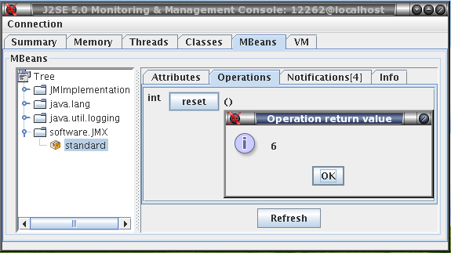
Zak³adka Threads prezentuje informacje dotycz¹ce dzia³aj¹cych w¹tków. Zaznaczaj¹c w¹tek na liœcie (w lewym-dolnym rogu) mo¿emy obejrzeæ zawartoœæ jego stosu i inne dane. Pole Filter pozwala filtrowaæ w¹tki pojawiaj¹ce siê na liœcie: bêdzie ona zawieraæ tylko te, których nazwy zawieraj¹ napis podany w tym polu.
Wiêcej informacji mo¿emy uzyskaæ pos³uguj¹c siê mx-ziarnami bezpoœrednio.
Wybieramy zak³adkê MBeans a w drzewie m-ziaren rozwijamy ga³¹Ÿ java.lang
i zaznaczamy element Threading (odpowiada on mx-ziarnu ThreadMXBean).
Zak³adka Operations prawego panelu pozwala wywo³ywaæ metody tego mx-ziarna.
W szczególnoœci mo¿emy dowiedzieæ siê ile czasu wykonywa³ siê dany w¹tek.
Zobaczymy jak wykryæ ewentualn¹ blokadê.
W tym celu uruchomimy przyk³adowy program z katalogu
JDK_HOME/demo/management/FullThreadDump/,
który demonstruje to zjawisko uruchamiaj¹c trzy wzajemnie blokuj¹ce siê w¹tki.
Nastêpnie, na innej maszynie uruchomimy konsolê i wywo³amy metodê
findMonitorDeadlockedThreads() z mx-ziarna ThreadMXBean.
Przy okazji zobaczymy jak uruchamiaæ program aby umo¿liwiæ jego zdalne nadzorowanie.
1234).
Klasa Deadlock - zawieraj¹ca metodê startow¹ -
jest zawarta w archiwum FullThreadDump.jar,
st¹d opcja -cp FullThreadDump.jar.
Program tworzy trzy w¹tki, które wpadaj¹ w blokadê, poniewa¿ ka¿dy z nich wymaga do dzia³ania
zasobu zajêtego przez inny.
W efekcie program nie mo¿e siê wykonywaæ i trzeba go zakoñczyæ.
Oto wydruk jego dzia³ania:
Teraz uruchamiamy konsolê w zwyk³y sposób wybieraj¹c zak³adkê Remote i
wype³niaj¹c j¹ tak, jak to wczeœniej opisano.
Poniewa¿ uruchamiaj¹c badan¹ JVM zrezygnowaliœmy z autoryzacji
(w³aœciwoœæ com.sun.management.jmxremote.authenticate=false),
podawanie identyfikacji u¿ytkownika nie jest konieczne.
Zatem wystarczy w zak³adce Remote wpisaæ coœ takiego:
Teraz otwieramy zak³adkê MBeans, w drzewie m-ziaren rozwijamy ga³¹Ÿ
java.lang i zaznaczamy element Threading.
Z prawego panelu wybieramy zak³adkê Operations i klikamy przycisk z nazw¹ metody
findMonitorDeadlockedThreads().
Pojawi siê okienko z numerami w¹tków, które s¹ w stanie blokady.
Jak widaæ, w¹tki o identyfikatorach 11, 12, 13 s¹ w stanie blokady.
W zak³adce Threads mo¿emy przeanalizowaæ zawartoœæ stosu ka¿dego z nich
aby siê dowiedzieæ, co powoduje blokadê.
Mo¿na te¿ - podobnie jak metodê wykrywaj¹c¹ blokadê -
wywo³aæ metodê getThreadInfo(long id, int maxDepth) z tego samego mx-ziarna.
Pozwala ona szczegó³owo analizowaæ zawartoœæ stosu
(trzeba jej przekazaæ numer w¹tku i g³êbokoœæ na jak¹ chcemy wnikn¹æ w stos).
Mo¿liwoœæ zdalnego wykrycia blokady jest bardzo cenna, poniewa¿ pozwala rozstrzygn¹æ dlaczego program siê nie wykonuje. Przyczyn zawsze mo¿e byæ wiele. Niektóre z nich ustêpuj¹ - inne wymagaj¹ si³owego zakoñczenia programu.
Dokumentacja podstawowa:
javax.management wraz z podpakietami
java.lang.management
Po polsku:
Przyk³adowe programy znajduj¹ siê w katalogach: